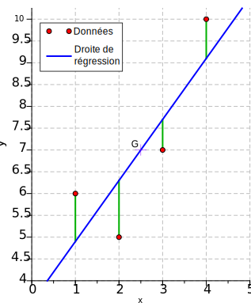

Les applications dans le domaine de la santé ont trois objectifs : récupérer des données de santé à
partir des différents services et objets connectés, les traiter à partir de modèles mathématiques et de
les afficher de manière simple et pertinente à l’utilisateur afin de la conseiller pour l’aider à
améliorer sa santé.
Récolte des données
La première étape des applications connectées sont de récupérer les données de santé depuis des
appareils
connectés ou un serveur intermédiaire. Certaines applications de santé collectent des informations de
santé à l’aide des capteurs de l’appareil. Nous vous invitons à consulter l’explication sur le
fonctionnement des objets connectés pour en savoir plus sur la façon de collecter des données.
La récupération des données depuis des appareils connectés peut se faire de plusieurs façons : connexion
Bluetooth, Wifi, cable USB, réseaux mobiles, etc… Ici, nous détaillerons le type de connexion le plus
courant suite à un coût faible, une simplicité d’utilisation et de mise en place et une efficacité
suffisante : le Bluetooth.
Exemple d'un picoréseau
Le Bluetooth établit une transmission d'information entre deux informations via l'encodage, l'émission,
la réception et le décodage d'un signal à l'aide d'une puce dédiée.
Prenons l'exemple d'un téléphone souhaitant se connecter à une montre connecté. Pour débuter la
connexion, l'objet connecté va émettre un signal "ping" qui va permettre à n'importe quel appareil de
connaître la présence de l'appareil. Nous pouvons ensuite nous connecter à cette montre via notre
smartphone. Cela forme un "picoréseau" où le téléphone est "maître" et le téléphone "esclave".
Les appareils communiquent ensuite entre eux avec des ondes radios courtes d'environ 15 mètres compris
dans une bande de fréquence variant entre 2.4 GHz à 2.485 GHz. Cette bande de fréquence est divisée en
canaux de 1 Mhz soit 79 canaux. Ensuite, pour communiquer, le Bluetooth utilise le "Frequency Hopping
Spread Spectrum". Le FHSS repose sur le principe de changer très rapidement de canaux de fréquence dans
un ordre connu à l'avance car un "saut de fréquence" déterminée. Ce saut de fréquence permet d'éviter
les interférences.
Le Bluetooth très répandu est une technologie sécurisée. Tout d'abord, grâce une couche bande de base
qui
définit une adresse matérielle unique pour le périphérique Bluetooth appelé BR_ADDR codée sur 48 bits.
Cependant, il existe une couche Link Manager qui gère l'authentification, l'appariement, la création et
modification des clés et le cryptage des données envoyées.
Le Bluetooth est idéale pour les objets connectés, car il est très peu gourmand en énergie. Depuis
quelques
années le Bluetooth à base consommation créée par Nokia en 2006 devient de plus en plus courant
notamment dans les petits objets connnectés. Il a une consommation 10 fois moindre que le Bluetooth
standard.
Traitement des données
Après la récupération des données, l'application doit les traiter pour pouvoir conseiller l'utilisateur.
Ces traitements peuvent plus ou moins complexes. Nous vous allons ici vous présentez une liste non
exhaustives des modèles mathématiques utilisés lors du traitement des données.
Une grande majorité des traitements sont des opérations mathématiques simples tels que le dénombrement,
la somme, la moyenne, etc... Ils peuvent vous indiquer le nombre de pas journalier, le nombre de minutes
actives, le nombre de calories dépensées, votre fréquence cardiaque moyenne ou encore votre durée de
sommeil hebdomadaire...

Régression linéaire
Cependant, il existe également des traitements plus complexes comme la régression linéaire. Supposons
que nous souhaitons estimer de manière précise le nombre de minutes qu'il faudrait pour que
l'utilisateur dépense un certain nombre de pas. Pour être précis, nous pouvons utiliser la régression
linéaire sur des données que nous avons précédemment collecté.
Le but est de trouver une équation de droite tels que la somme des différences avec les points actuels
soient minimales.
Enfin, de nos jours, l'apprentissage automatique qui fait partie de l'intelligence artificielle est de
plus en plus utilisée. Le principe est simple : à partir de données de base, extraire un motif récurrent
pour qu'après avec des nouvelles données l'algorithme détermine la réponse. En pratique, la conception
d'un tel algorithme est complexe et nécessite de nombreux calculs mathématiques. L'apprentissage profond
est un modèle très utilisé : il imite notre réseau de neurones en séparant les tâches en différentes
couches.
Affichage des données
Le but d’une application de santé est d’afficher de façon simple et ergonomique à l’utilisateur ses
statistiques et ses progrès. Certaines applications en plus d’afficher les données, proposent des
suggestions pour améliorer sa santé et son bien-être, et félicite régulièrement l’utilisateur pour
chaque progrès afin qu’il continue à s’améliorer.
Google Fit
Prenons l'exemple de Google Fit. Sur Google Fit, nous voyons d'une façon simple le nombre de minutes
actives et le nombre de minutes Cardio (l'équivalent du nombre de minutes actives avec une forte
activité). Les 2 objectifs sont présentés sous des barres de progression circulaires. Ils servent
d'indicateurs simples, recommandés par l'OMS et ajustable. En effet, chaque semaine, Google Fit réajuste
automatiquement les objectifs selon la semaine précédente.